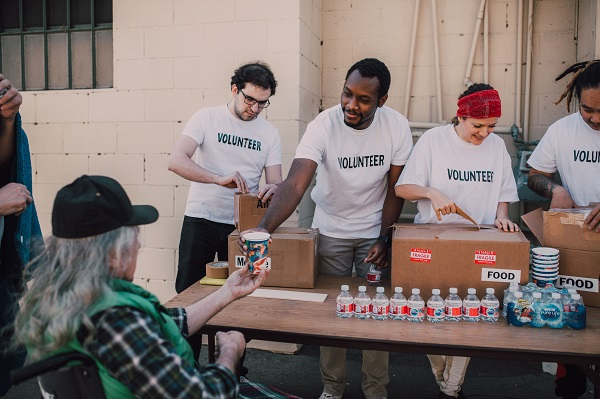

Ação do Mês: Cozinha Comunitária
Neste mês, conseguimos preparar e entregar mais de 1.200 marmitas na comunidade local graças ao apoio dos nossos voluntários e doadores.
A Mesa Solidária é uma organização focada em combater a fome e garantir refeições de qualidade para famílias em situação de vulnerabilidade.

Promover a segurança alimentar e a dignidade humana por meio do engajamento social e doações voluntárias.
Neste mês, conseguimos preparar e entregar mais de 1.200 marmitas na comunidade local graças ao apoio dos nossos voluntários e doadores.
Deseja confirmar o envio dos alimentos para a ONG Mesa Solidária?